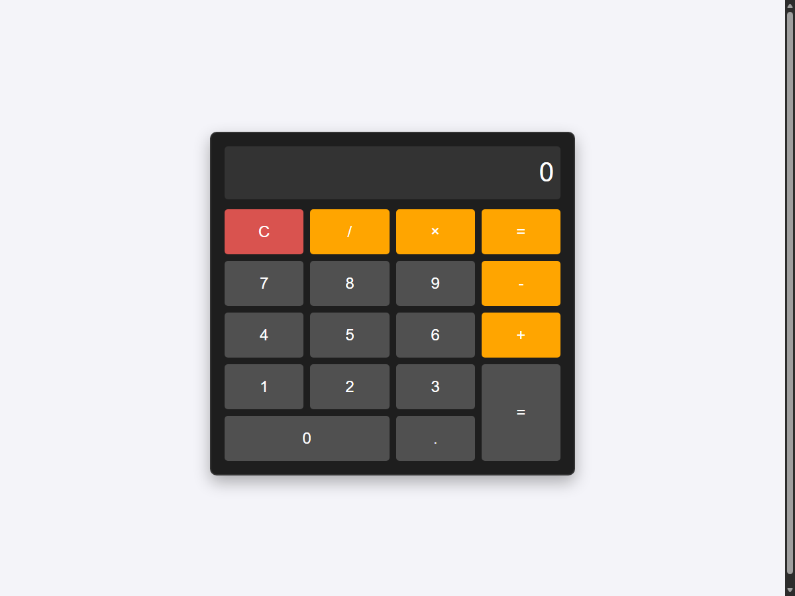
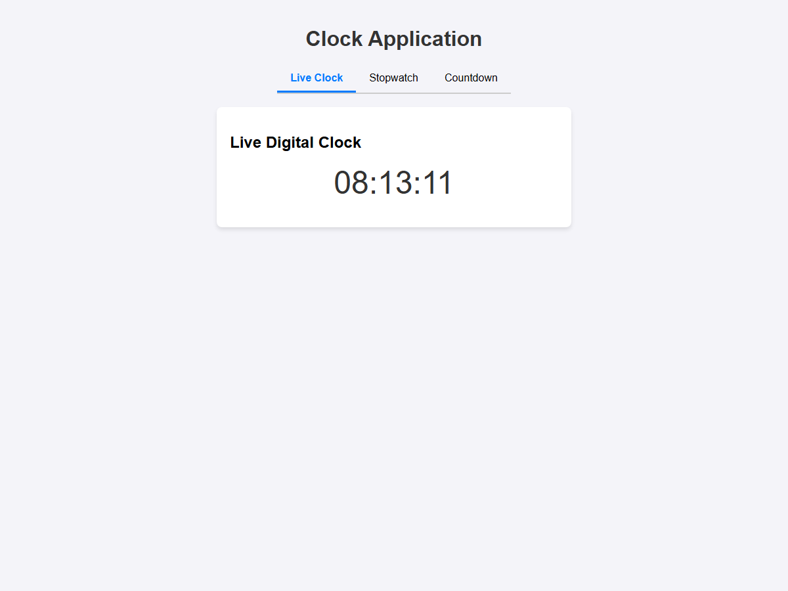
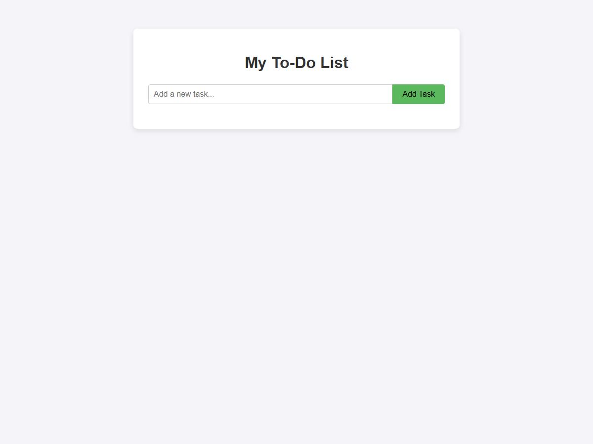

Everything I tried in the app on 17 September 2026 with the 4B model, written so you can repeat it step by step before the showcase: what to type, what should happen, and what I saw.
Do these on the demo machine ahead of time, not in front of the audience. Every step here is one-off or quick.
| Step | Why | |
|---|---|---|
| ☐ | Get the code and the model. Install Git LFS once (git lfs install). The repository also holds the Gemma 4 E2B, so fetch only the demo model: clone with git clone -c "lfs.fetchinclude=models/gemma-4-e4b-it-qat/*" <repository URL>, or in an existing clone run git config lfs.fetchinclude "models/gemma-4-e4b-it-qat/*" before git pull. Check that models/gemma-4-e4b-it-qat/ holds four files ending -00001-of-00004.gguf … -00004-of-00004.gguf, about 4 GB together (30 MB, 1.5 GB, 1.4 GB, 1.0 GB), not small text placeholders. The E2B folder then holds placeholders, which the app does not list. | The models are stored with Git LFS. Without it, Git fetches placeholder files instead of the model. Every download counts against GitHub's 10 GiB of LFS bandwidth a month: 3.9 GiB for the demo model, 6.8 GiB for both. |
| ☐ | Build and start once, well before. Run .\run.ps1 in PowerShell or run.bat in Command Prompt (Windows), or ./run.sh (macOS, Linux), from the project folder and wait for it to finish starting. Leave that window open during the demo. | The first run builds the inference runtime (about 10 minutes with CUDA) and the UI. Later starts take seconds. |
| ☐ | Plug in the power and close games, video editors and other GPU-heavy apps. | On battery the laptop slows down. The model needs about 4.6 GB of video memory, and other apps can hold 1–2 GB. |
| ☐ | Open the app at http://localhost:5173 in a wide browser window, so the sidebar stays visible. | A narrow window folds the sidebar behind a menu button. |
| ☐ | Load the model from the card at the bottom of the sidebar: choose Gemma 4 E4B and press Load. Wait for READY and 32K context. | The first load reads 4 GB from disk. After that, a load took 5.6 s. |
| ☐ | Warm up: send one short chat message and ask one question in a code task (flows 2 and 3 below). Then delete those sessions from the sidebar. | You see it working end to end, and the demo starts without first-use delays. |
| ☐ | Prepare a fresh demo project: copy docs/showcase/demo-project into a new folder of its own (for example demo-run\project). In the Code tab, open the project picker at the top of the sidebar, choose Open or create a project… and select demo-run. | Demo tasks write files and new folders there. A fresh copy means nothing is left over from rehearsal. |
| ☐ | Tidy the sidebar: delete old sessions you don't want on screen. | Old chats from other models show a "Last used with another model" banner. |
| ☐ | Set the starting mode under the message box for your first code demo (Ask for questions, Plan for a planned change, Auto for building an app), and start each demo with New task. | A fresh task keeps earlier requests out of the model's history. |
| ☐ | Keep the prompts below at hand (copy and paste works). Leave Web search (the globe icon) off. | Everything runs locally, and the prompts below are the ones rehearsed. |
32K context, the Code tab shows your demo project, and a warm-up chat answered at 100+ tokens per second.
In the Chat tab, start a new chat and send:
I saw: first text 0.5 s, 100 tokens per second, done in 1.6 s. In the test suite, nine different chat questions took 0.3–2.3 s each at 113–129 tokens per second (higher is faster).
In the Code tab, press New task, pick Ask below the message box, and send:
project/README.md and project/orders.py, then answers. Nothing is changed and nothing asks for approval (Ask mode reads freely).
I saw: five steps, no retries, correct answer: a command-line tool that reads an order from JSON and prints the total; TAX_RATE = 0.08; order_total multiplies the subtotal by 1 + tax_rate and rounds to two decimals.
Start a new task, pick Plan, and send:
python -m unittest (in project). Press Allow once.orders.py gains total_quantity, test_orders.py gains a test, and the tests pass. Each file change has View changes, showing only the changed lines.
I saw: the model first forgot to import the new function, so the test run failed with a NameError. It read the error, fixed the import and asked to run the tests again (a second Allow once). All three tests then passed.
Start a new task, pick Auto, and send:
todo/index.html, checks it, and reports. Open that file in your browser: type a task and press Add Task; click a task to mark it done; Delete removes it; the list survives a reload.
I saw: about 50 s. Everything worked; empty tasks are ignored. On an earlier try, before a fix made that morning, the model wrote the page into the wrong folder. The app now catches that and sends it back.
The same way (new task, Auto), these are the exact prompts the automated test runs used:



| What | Time I measured |
|---|---|
| Load the model | 5.6 s |
| Chat reply | first text 0.1–0.5 s; 100–129 tokens/s; 0.3–2.3 s in total |
| Question about the project (Ask) | a few seconds of model time, 5 steps |
| Plan (Plan mode) | about 20 s |
| Change with tests (test suite, Auto) | 16.3 s, 5 tests passing |
| Calculator / clock / to-do app (Auto) | 47.8 s / 54.3 s / about 50 s |
def line it was documenting. Asking it to run the tests after a change, and looking at View changes, shows these quickly.Delete the demo-run folder (or send it to the Recycle Bin). The app keeps the sessions in its history until you delete them from the sidebar.